Beam
Hold fire and it stays on, burning everything on its line.
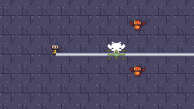
Every component, combo and reaction, recorded on build v0.20261027 by the daily run (virtual display, fixed seed). Forms · Elements · Modifiers · Triggers · Combos · Reactions
Hold fire and it stays on, burning everything on its line.

One shot, straight. Reliable, which the guild suspects.
Dash a long way, fast. Plan the landing.

Dash a little farther the way you walk. Still no safer.

History of content/spells/forms/medium_dash/medium_dash.tres
Eight shots in a ring. Best when too close.
Three orbs circle you, hitting what comes near.
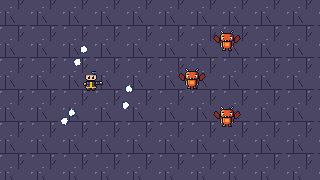
Sits where you put it and waits. Patience, on the floor.
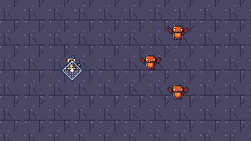
A short dash the way you walk. It does not make you safe.
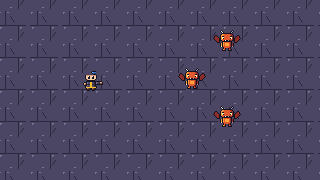
Burns what it hits. Eager, and slightly proud of it.
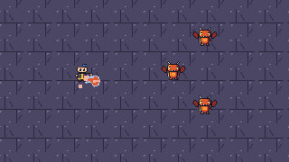
Slows; the third chill in a row freezes. Patient.
Charges; a hit on a charged foe zaps the others near.
Shocks; the next hit jumps to a nearby foe. Quick.
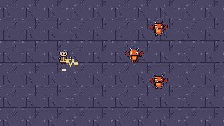
Hexes: more damage taken, and pulled in. A bit rude.
Wider, harder, slower to fly and recast. Not subtle.
After a hit, jumps to another foe, up to twice. Costs some.
Faster, a little softer. Arrives before the excuses.
Bends toward the nearest foe. Aim is a suggestion.
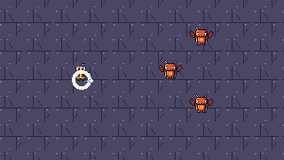
Goes through a couple of foes. Weaker, politely.
Half the wait before the next cast, for a little more mana.
History of content/spells/modifiers/short_delay/short_delay.tres
A fan of three shots, each weaker. A bit much.
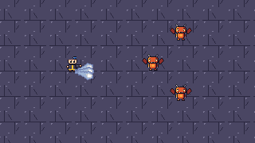
One ring hits every imp within reach around the caster.
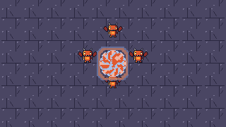
A fire blast where the bolt ends, with nothing in its way.
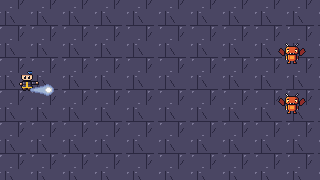
A fire bolt; the imp keeps losing health after the hit.
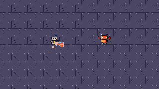
Dash with one staff, then a fire bolt from another: the imp burns.
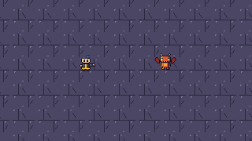
The dash card moves its caster; nothing else happens.

A ring that throws a fan of three fire bolts outward every half second.
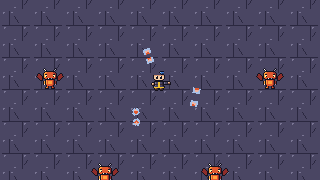
A fire rune waits on the floor and, when it ends, bursts into a ring of fire that burns the imps standing near it.
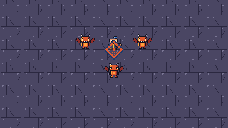
A frost ring that goes through a packed crowd and chills nearly every imp it passes.
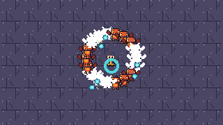
A frost rune that pulses a frost nova every half second; imps standing round it freeze.
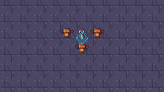
A frost bolt's hit fires a storm ray onward from the target, through the imps behind it.
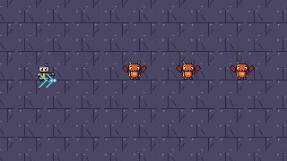
History of content/spells/combos/frost_then_lightning_ray.json
A void ring hexes the imps in front of you; each hexed imp bursts into a ring of fire that burns the imps beside it.
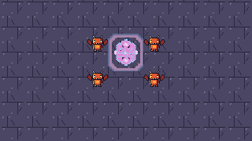
Three homing bolts bend toward imps well off the aim, beyond what a plain fan of three reaches.
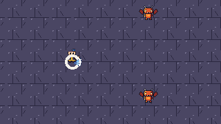
A long dash with one staff, then a fire bolt from another: the imp burns.

The long dash moves its caster a fixed 128 px; nothing else happens.
A medium dash with one staff, then a frost bolt from another: the imp is hit.
The medium dash moves its caster a fixed 80 px; nothing else happens.
A fire bolt sets an imp burning; a lightning bolt on it sets off Overload, which also hurts the imp standing next to it.
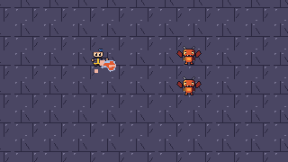
A quick ring of shock that flies farther and is ready again before a plain ring is (the second cast, at 0.8 s, is refused without Faster).
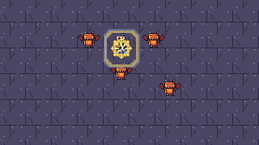
A bolt that turns toward an imp, goes through it, and at the end of its flight bursts into frost on the imp waiting there.
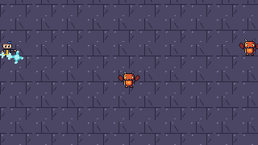
A ray that turns toward an imp a little off the aim and hexes it.
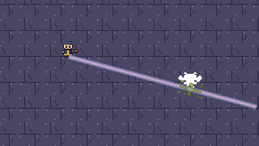
One wizard's lightning ring charges three imps; the other's lightning bolt hits one and the charge jumps to the other two.
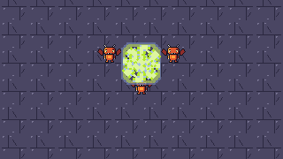
A frost bolt chills the imp, then a storm bolt on it sets off Shatter.
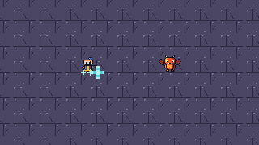
Two bolts close together: with Short Delay the second cast, at 0.25 s, is ready in time.
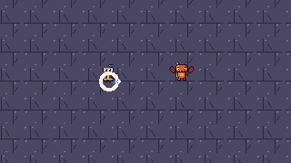
A ring of shock that is ready again in half the time, so the second ring at 0.5 s goes out too.
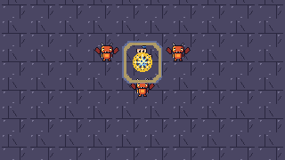
History of content/spells/combos/short_delay_shock_ring.json
A lightning ring charges three imps standing close together; a lightning bolt then hits one of them and the charge jumps to the other two.
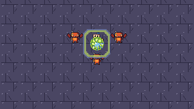
A big lightning ring charges every imp round the caster.
A hit jumps to the next imp, and that imp's shock makes the next hit jump once more.
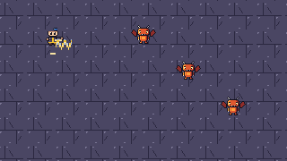
A ray through three imps in a line.
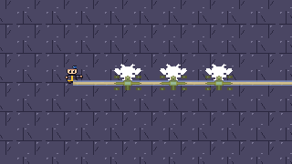
A storm rune on the floor; an imp that steps on it is hit, and the hit jumps on to the imps standing farther off.
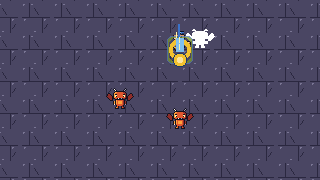
Two players: one sets an imp burning, the other's pulsing storm bolt sets off Flare on it.
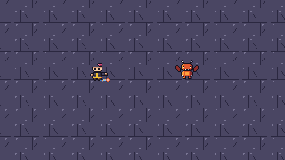
One wizard's frost bolt chills the imp; the other's lightning bolt then freezes it solid.
A fast line through the room that hits every imp on it.
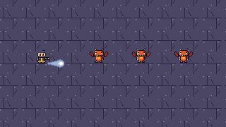
Circling shots hex every imp that crosses the orbit.
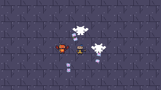
A wide ray that chills the imp in its lane.
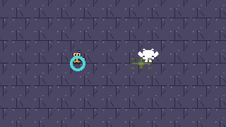
Storm on burning or Fire on shocked: bursts for 2 damage within 56 pixels.
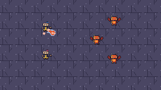
Void on burning or Fire on hexed: spreads the status to other targets within 48 pixels.
Lightning on burning or Fire on static: bursts for 4 damage within 52 pixels.
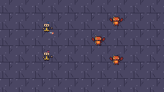
Void on shocked or Storm on hexed: bursts for 2 damage within 48 pixels, pulling targets in.
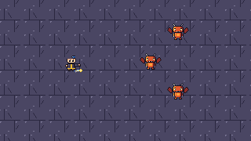
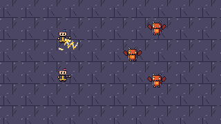
Storm on chilled or Frost on shocked: uses up the status for 6 bonus damage (doubled while the target is frozen).
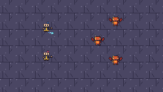
Void on chilled: freezes the target for 2 seconds (or keeps it frozen that much longer). Frost on hexed: extends the hexed status by 2 seconds and its strength by 25.
Lightning on chilled: freezes the target for 1.5 seconds (or keeps it frozen that much longer). Frost on static: uses up the status for 4 bonus damage (doubled while the target is frozen).
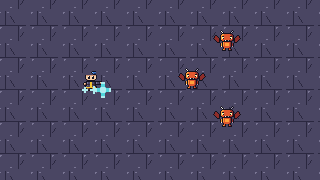
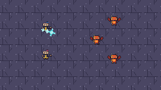
Frost on burning or Fire on chilled: bursts for 3 damage within 40 pixels, using up the status.